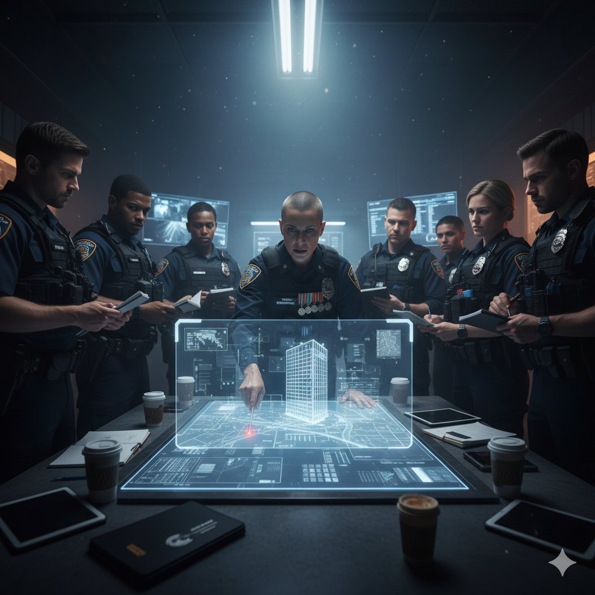

Police Fatal Shooting in Jamaica-What Says INDECOM?
September 20, 2025 by Shane NewsWatcher
The Independent Commission of Investigations (INDECOM) consistently expresses grave concern over the high rate of fatal shootings by security forces in Jamaica. Their official position, as reflected in various reports, is that while police are tasked with fighting crime, the use of lethal force must be reasonable, proportionate, and a last resort. INDECOM's investigations frequently highlight a pattern of questionable police operations, including a disproportionate number of deaths arising from pre-planned raids, and a failure to produce written plans for these operations. The Independent Commission of Investigations (INDECOM) consistently expresses grave concern over the high rate of fatal shootings by security forces in Jamaica. Their official position, as reflected in various reports, is that while police are tasked with fighting crime, the use of lethal force must be reasonable, proportionate, and a last resort. INDECOM's investigations frequently highlight a pattern of questionable police operations, including a disproportionate number of deaths arising from pre-planned raids, and a failure to produce written plans for these operations.
The commission works to hold officers accountable for abuses, and their data indicates that the number of fatal police shootings has seen a significant decline in years when INDECOM has been most active in bringing charges and initiating prosecutions. This suggests that their oversight has a deterrent effect, promoting more disciplined policing practices. INDECOM also advocates for measures like the consistent use of body-worn cameras to improve transparency and accountability, as conflicting accounts from police and citizens are common.